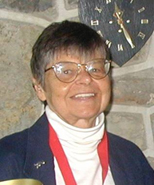
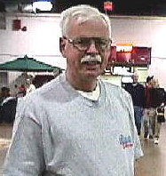
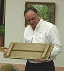

Angelo Triandafiliou
1945 - 2005
We all appreciated Angelo's fine woodworking skill. Everyone who knew him was touched
by his kindness, his thoughtfulness, his generosity and his wit. He was a driving force behind and an
integral part of everything this guild has accomplished. If it needed to be done for the guild, for his
family or for his church Angelo was there.

Helen Lamb Patterson
1935 - 2006
Helen was a caring person who was involved in the guild steering committee and
several community programs. She was an early member of the guild and responsible for the design of our logo.

Robert Tinsman
???? - 2009
Bob was one of the original members of the guild. During the years that the
guild helped run the American Woodworker Shows, Bob was a "Take Charge" guy that kept
everyone moving in the same direction.

Richard C. Assetto
1959 - 2009
Rich was a kind and caring man. He reached out to members in need of help.
For several years he printed the guild newsletter without charge. He touched the lives of many
and will be missed by all who knew him.